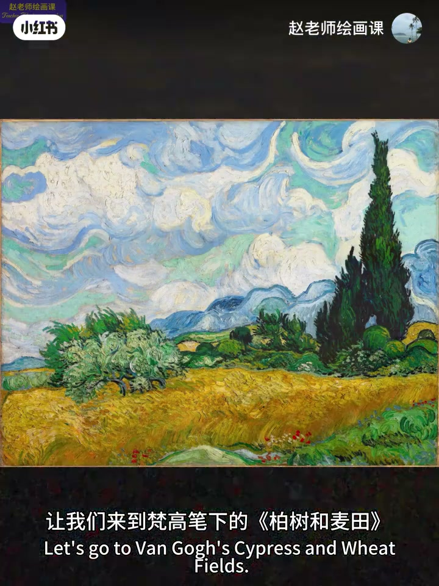
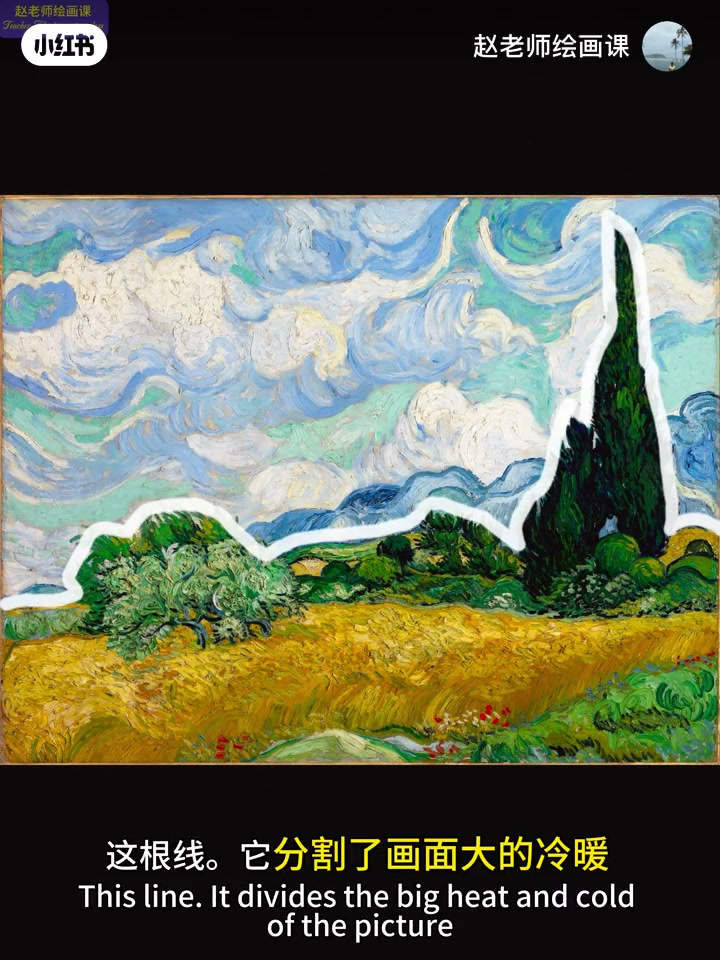
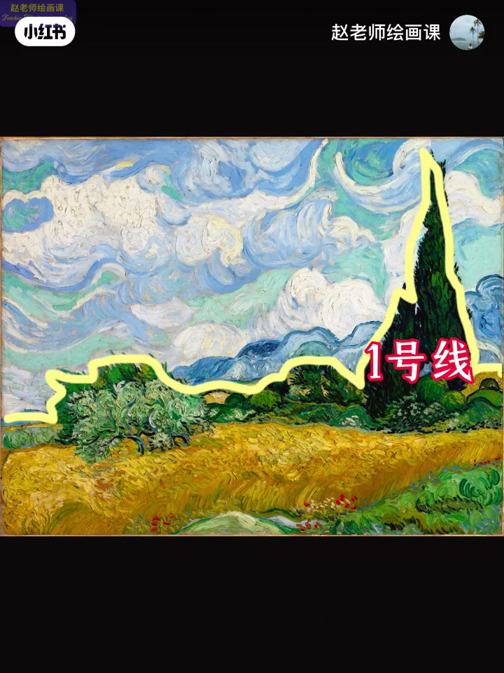
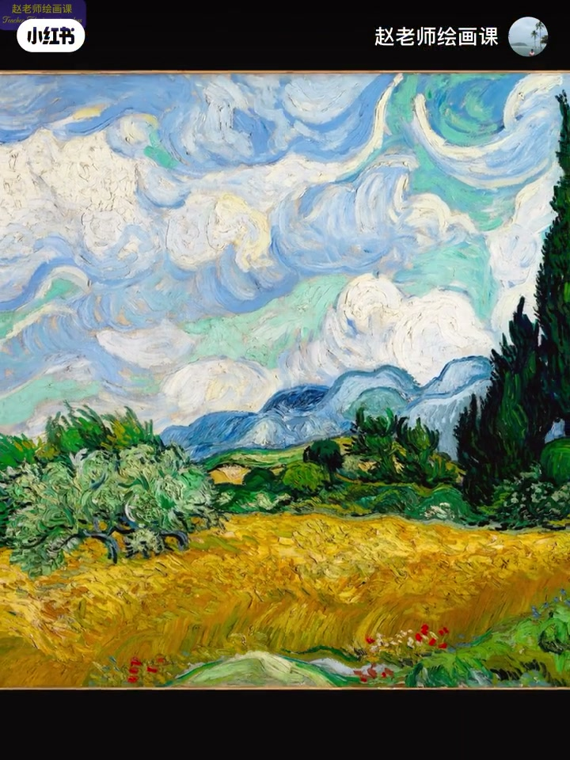
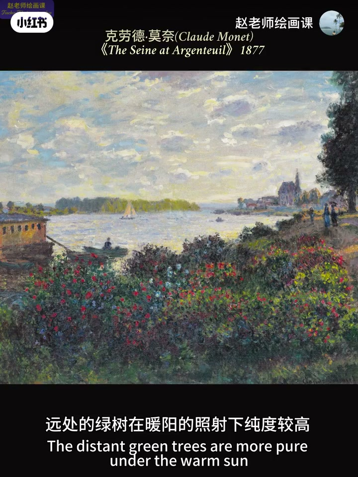

内容要点
远山画得很实很蓝、树绿又鲜，为何仍有空间感？梵高柏树麦田靠两条对比分界线：一号线山与麦田树轮廓，冷暖加明度定大空间基调；二号线山与天，同冷系靠明度拉开纵深。只要对比强度递减，远山再饱和也能稳在远处。柯罗同理；莫奈远树高纯、近草阴影低纯是客观事实。勿为「造空间」把远景糊成含糊——远景仍要有形有相。
知识结构
一号冷暖+明度；二号同冷明度；强度递减。
柯罗同理；晴天远山本可清晰饱和。
莫奈所见大胆画；远景要形状与色相。
画远景优先管对比强度递减，而不是一律降饱和、抹细节；分界线定冷暖与明度层次，远景仍保留具体形与色。
00:00-01:25梵高：两条对比分界线
开场两问：远山实且蓝、树绿鲜艳，为何仍有空间？走进梵高柏树与麦田。第一条：山与麦田树轮廓——分割大冷暖；冷后退暖前进，并伴明度强对比，确立基本空间秩序（强度一号线）。
第二条：山脉与天空明度分割——同为冷色系，靠明度拉开纵向层次（二号线）。一号线定基调，二号线延续纵深；故二号线中远山很饱和，只要遵循对比强度递减，仍稳处视觉远处。00:18／00:30／00:49。



01:25-02:02柯罗同理：勿强行糊远景
柯罗作品与梵高异曲同工。天气晴朗时，远景山本就是既清晰又饱和——不能强行为制造空间感，主观把画面色彩糊掉。
风景色彩规律指向课程详解与作业。01:25 柯罗远山可指认。

02:02-02:55莫奈客观＋远景有形有相
总归遵循事实：莫奈远处置暖阳下的绿树纯度较高，近处大片草地在阴影中纯度较低——客观所见，大胆画出来。也可用强烈面积大小对比造空间。
没有画家愿把远景处理得模糊含糊；即便洛佩兹极远视角，远景仍有具体形状与明确色相。合理利用对比强度递减，是画好远景的最好办法。02:05 莫奈对照。

完整转录（51段）
以下文本由 Whisper medium 模型自动转录，可能存在少量识别误差，已尽可能修正。
为什么远处的山画的那么实那么蓝依然有很强的空间感
为什么树的绿既鲜艳又醒目仍有很强的距离感
为了搞清楚上面的问题
让我们来到梵高笔下的柏树和麦田
看看梵高是如何通过两条关键的色彩对比分界线实现的空间魔法
第一条线山与麦田树的轮廓这根线
它分割了画面大的冷暖
因为冷色有天然的后退感暖色向前
由此确立了画面基本的空间秩序
同时伴随着明度的强对比也在强化着这种空间感
这是强度一号线
第二山脉与天空的明度分割线
同为冷色系的山与天
通过明度对比拉开纵向层次
这是强度二号线
总结一下
一号线通过冷暖加明度对比
确立大的空间基调
而二号线只依赖明度对比延续纵循感
所以即使二号线中的远山画得很饱和
但只要遵循对比强度递减规律
仍能稳定的处于视觉远处
再看一幅科罗的作品
是不是和樊高有异曲同工之妙
其实天气晴朗的时候
远景中的山就是既清晰又饱和的状态
所以不能强行为了制造空间感
主观一段的助理画面色彩
关于风景绘画中的色彩规律及应用
在我六月底的色彩系统课中
我会有详细的享受
以及针对性的作业训练和讲评
详情请查看制定笔记
总归还是要遵循事实
来看一幅莫奈的作品
远处的绿树在暖阳的照射下纯度较高
而近处的大片草地因为处在阴影中纯度较低
这是莫奈眼里看到的客观事实
像她一样大胆地画出来吧
你还可以利用强烈的面积大小对比
来制造空间感
没有任何一位画家愿意把圆景处理得莫冷凉渴
即便是洛佩兹笔下如此遥远的视角
画中的圆景也有具体的形状和明确的色相
所以合理利用对比强度递减规律
就是画好圆景的最好办法
好了 今天就到这
原创不易 感谢三连
欢迎关注我的绘画课
让你的绘画水平与审美能力双丰收
下期见 拜拜